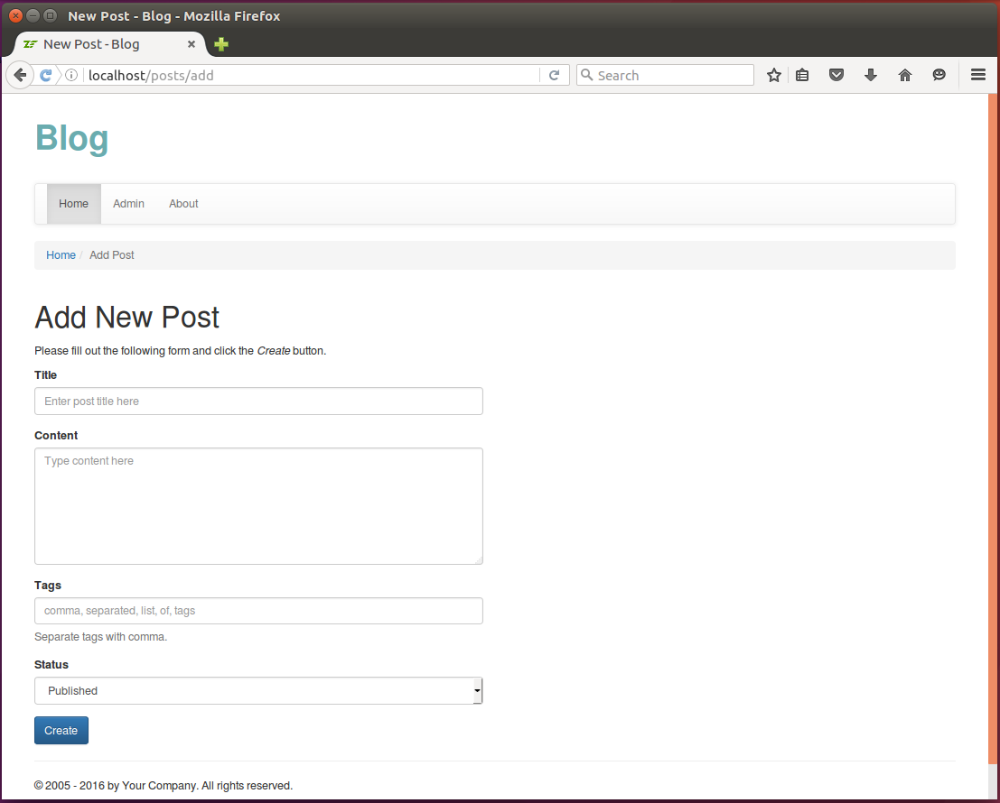

12.9. Adding New Post
In this section, we will create the Add New Post web page that will allow to add a new post to blog. For this, we will need four things:
- the
PostFormform model will be used for entering and validation of post title, content, status and tags; - the
PostManagerservice model will contain business logic for saving new post to database; - the
PostControllercontroller and itsPostController::addAction()action method will be used for getting form data, and callingPostManagerfor saving the data to database. - and add.phtml view template will render the form.
12.9.1. Adding PostForm
First, we add the PostForm form that will allow to enter data of a single post:
its title, content, comma-separated list of tags associated with the post, and status (Published or
Draft). To do that, create the PostForm.php file in Form directory under module's
source directory. Put the following content into the file:
<?php
namespace Application\Form;
use Zend\Form\Form;
use Zend\InputFilter\InputFilter;
use Application\Entity\Post;
/**
* This form is used to collect post data.
*/
class PostForm extends Form
{
/**
* Constructor.
*/
public function __construct()
{
// Define form name
parent::__construct('post-form');
// Set POST method for this form
$this->setAttribute('method', 'post');
$this->addElements();
$this->addInputFilter();
}
/**
* This method adds elements to form (input fields and submit button).
*/
protected function addElements()
{
// Add "title" field
$this->add([
'type' => 'text',
'name' => 'title',
'attributes' => [
'id' => 'title'
],
'options' => [
'label' => 'Title',
],
]);
// Add "content" field
$this->add([
'type' => 'textarea',
'name' => 'content',
'attributes' => [
'id' => 'content'
],
'options' => [
'label' => 'Content',
],
]);
// Add "tags" field
$this->add([
'type' => 'text',
'name' => 'tags',
'attributes' => [
'id' => 'tags'
],
'options' => [
'label' => 'Tags',
],
]);
// Add "status" field
$this->add([
'type' => 'select',
'name' => 'status',
'attributes' => [
'id' => 'status'
],
'options' => [
'label' => 'Status',
'value_options' => [
Post::STATUS_PUBLISHED => 'Published',
Post::STATUS_DRAFT => 'Draft',
]
],
]);
// Add the submit button
$this->add([
'type' => 'submit',
'name' => 'submit',
'attributes' => [
'value' => 'Create',
'id' => 'submitbutton',
],
]);
}
/**
* This method creates input filter (used for form filtering/validation).
*/
private function addInputFilter()
{
$inputFilter = new InputFilter();
$this->setInputFilter($inputFilter);
$inputFilter->add([
'name' => 'title',
'required' => true,
'filters' => [
['name' => 'StringTrim'],
['name' => 'StripTags'],
['name' => 'StripNewlines'],
],
'validators' => [
[
'name' => 'StringLength',
'options' => [
'min' => 1,
'max' => 1024
],
],
],
]);
$inputFilter->add([
'name' => 'content',
'required' => true,
'filters' => [
['name' => 'StripTags'],
],
'validators' => [
[
'name' => 'StringLength',
'options' => [
'min' => 1,
'max' => 4096
],
],
],
]);
$inputFilter->add([
'name' => 'tags',
'required' => true,
'filters' => [
['name' => 'StringTrim'],
['name' => 'StripTags'],
['name' => 'StripNewlines'],
],
'validators' => [
[
'name' => 'StringLength',
'options' => [
'min' => 1,
'max' => 1024
],
],
],
]);
}
}
As you can see from the code above, the PostForm class defines a ZF3 form with title, content,
tags, and status fields. It also has the Submit button.
Since we covered forms in details in previous chapters, here we do not explain the code presented above deeply.
12.9.2. Adding PostManager Service
According to Domain Driven Design pattern, we put business logic into service models. In our Blog
sample, we will create and register the PostManager service. This service will have the addNewPost()
public method that will contain business logic of adding Post entity to database and associating it with
one or several Tag entities.
The
PostManagerservice will contain business logic of the Blog sample. This business logic includes, but not limited to, adding new post to the blog.
Create the PostManager.php file inside the Service directory under the module's source directory. Put the following content into that file:
<?php
namespace Application\Service;
use Application\Entity\Post;
use Application\Entity\Comment;
use Application\Entity\Tag;
use Zend\Filter\StaticFilter;
// The PostManager service is responsible for adding new posts.
class PostManager
{
/**
* Doctrine entity manager.
* @var Doctrine\ORM\EntityManager
*/
private $entityManager;
// Constructor is used to inject dependencies into the service.
public function __construct($entityManager)
{
$this->entityManager = $entityManager;
}
// This method adds a new post.
public function addNewPost($data)
{
// Create new Post entity.
$post = new Post();
$post->setTitle($data['title']);
$post->setContent($data['content']);
$post->setStatus($data['status']);
$currentDate = date('Y-m-d H:i:s');
$post->setDateCreated($currentDate);
// Add the entity to entity manager.
$this->entityManager->persist($post);
// Add tags to post
$this->this->addTagsToPost($data['tags'], $post);
// Apply changes to database.
$this->entityManager->flush();
}
// Adds/updates tags in the given post.
private function addTagsToPost($tagsStr, $post)
{
// Remove tag associations (if any)
$tags = $post->getTags();
foreach ($tags as $tag) {
$post->removeTagAssociation($tag);
}
// Add tags to post
$tags = explode(',', $tagsStr);
foreach ($tags as $tagName) {
$tagName = StaticFilter::execute($tagName, 'StringTrim');
if (empty($tagName)) {
continue;
}
$tag = $this->entityManager->getRepository(Tag::class)
->findOneByName($tagName);
if ($tag == null)
$tag = new Tag();
$tag->setName($tagName);
$tag->addPost($post);
$this->entityManager->persist($tag);
$post->addTag($tag);
}
}
}
In lines 25-43, we have the addNewPost() public method which takes the $data variable as argument (this variable
should contain the data entered by the website user into the form). We create a new instance of Post entity (line 28) and fill its
properties with user-provided data. We use the EntityManager's persist() method (line 36) to add the newly
created entity to entity manager. The addTagsToPost() private method is called (line 39) to assign
the post with one or several tags. And the flush() method is used for applying changes to database
in a single transaction (line 42).
The addTagsToPost() private method contains logic for removing old associations between the post and
tags (lines 49-52), then parsing comma-separated list of tags (line 55), and assigning new tags to the
post (lines 56-73).
Next, add a factory for the PostManager service. To do that, add the PostManagerFactory.php file under
the Service/Factory directory under the module's source directory. Put the following content into that file:
<?php
namespace Application\Service\Factory;
use Interop\Container\ContainerInterface;
use Zend\ServiceManager\Factory\FactoryInterface;
use Application\Service\PostManager;
/**
* This is the factory for PostManager. Its purpose is to instantiate the
* service.
*/
class PostManagerFactory implements FactoryInterface
{
public function __invoke(ContainerInterface $container,
$requestedName, array $options = null)
{
$entityManager = $container->get('doctrine.entitymanager.orm_default');
// Instantiate the service and inject dependencies
return new PostManager($entityManager);
}
}
Finally, we register PostManager service by modifying module.config.php configuration file as follows:
<?php
//...
return [
//...
'service_manager' => [
//...
'factories' => [
Service\PostManager::class => Service\Factory\PostManagerFactory::class,
],
],
//...
];
12.9.3. Creating Controller Action and View Template
For post management (e.g. adding, editing, viewing and removing posts), we will create the
PostController controller class. We create the addAction() action method inside the
PostController controller class that will allow to add a new post to blog (see code below):
class PostController extends AbstractActionController
{
/**
* Entity manager.
* @var Doctrine\ORM\EntityManager
*/
public $entityManager;
/**
* Post manager.
* @var Application\Service\PostManager
*/
private $postManager;
/**
* Constructor is used for injecting dependencies into the controller.
*/
public function __construct($entityManager, $postManager)
{
$this->entityManager = $entityManager;
$this->postManager = $postManager;
}
/**
* This action displays the "New Post" page. The page contains
* a form allowing to enter post title, content and tags. When
* the user clicks the Submit button, a new Post entity will
* be created.
*/
public function addAction()
{
// Create the form.
$form = new PostForm();
// Check whether this post is a POST request.
if ($this->getRequest()->isPost()) {
// Get POST data.
$data = $this->params()->fromPost();
// Fill form with data.
$form->setData($data);
if ($form->isValid()) {
// Get validated form data.
$data = $form->getData();
// Use post manager service to add new post to database.
$this->postManager->addNewPost($data);
// Redirect the user to "index" page.
return $this->redirect()->toRoute('application');
}
}
// Render the view template.
return new ViewModel([
'form' => $form
]);
}
}
Above, in line 33, we create an instance of PostForm form.
In line 36, we check whether this is a POST request. If the request is a POST request, we fill the
form with input data and validate the data. In case of valid data, we call the addNewPost() method
on the PostManager service (line 49), and redirect the user to the list of posts.
To instantiate the PostController, we will need a factory. Create the controller factory by adding the
PostControllerFactory.php file to the Controller/Factory directory under the module's source directory:
<?php
namespace Application\Controller\Factory;
use Interop\Container\ContainerInterface;
use Zend\ServiceManager\Factory\FactoryInterface;
use Application\Service\PostManager;
use Application\Controller\PostController;
/**
* This is the factory for PostController. Its purpose is to instantiate the
* controller.
*/
class PostControllerFactory implements FactoryInterface
{
public function __invoke(ContainerInterface $container,
$requestedName, array $options = null)
{
$entityManager = $container->get('doctrine.entitymanager.orm_default');
$postManager = $container->get(PostManager::class);
// Instantiate the controller and inject dependencies
return new PostController($entityManager, $postManager);
}
}
Next, register the PostController controller inside the module.config.php file:
<?php
//...
return [
//...
'controllers' => [
//...
'factories' => [
Controller\PostController::class =>
Controller\Factory\PostControllerFactory::class,
],
],
//...
];
Then, add the posts route for the new controller (modify the module.config.php as follows):
<?php
//...
return [
//...
'router' => [
'routes' => [
//...
'posts' => [
'type' => Segment::class,
'options' => [
'route' => '/posts[/:action[/:id]]',
'constraints' => [
'action' => '[a-zA-Z][a-zA-Z0-9_-]*',
'id' => '[0-9]*'
],
'defaults' => [
'controller' => Controller\PostController::class,
'action' => 'index',
],
],
],
],
],
//...
];
Finally, we add the view template. Create the add.phtml file in application/post directory under module's view directory and put the following content into it:
<?php
$form = $this->form;
$form->get('title')->setAttributes([
'class'=>'form-control',
'placeholder'=>'Enter post title here'
]);
$form->get('content')->setAttributes([
'class'=>'form-control',
'placeholder'=>'Type content here',
'rows'=>6
]);
$form->get('tags')->setAttributes([
'class'=>'form-control',
'placeholder'=>'comma, separated, list, of, tags'
]);
$form->get('status')->setAttributes([
'class'=>'form-control'
]);
$form->get('submit')->setAttributes(['class'=>'btn btn-primary']);
$form->prepare();
?>
<h1>Add New Post</h1>
<p>
Please fill out the following form and click the <i>Create</i> button.
</p>
<div class="row">
<div class="col-md-6">
<?= $this->form()->openTag($form); ?>
<div class="form-group">
<?= $this->formLabel($form->get('title')); ?>
<?= $this->formElement($form->get('title')); ?>
<?= $this->formElementErrors($form->get('title')); ?>
</div>
<div class="form-group">
<?= $this->formLabel($form->get('content')); ?>
<?= $this->formElement($form->get('content')); ?>
<?= $this->formElementErrors($form->get('content')); ?>
</div>
<div class="form-group">
<?= $this->formLabel($form->get('tags')); ?>
<?= $this->formElement($form->get('tags')); ?>
<?= $this->formElementErrors($form->get('tags')); ?>
<p class="help-block">Separate tags with comma.</p>
</div>
<div class="form-group">
<?= $this->formLabel($form->get('status')); ?>
<?= $this->formElement($form->get('status')); ?>
<?= $this->formElementErrors($form->get('status')); ?>
</div>
<?= $this->formElement($form->get('submit')); ?>
<?= $this->form()->closeTag(); ?>
</div>
</div>
Now, if you open the URL http://localhost/posts/add in your web browser, you should see the Add New Post page like shown in figure 12.7 below:
 Figure 12.7. Add New Post page
Filling the form and clicking the Create button results in saving the new post to database. Then you are able to see the newly created post in the list of posts at the Home page.